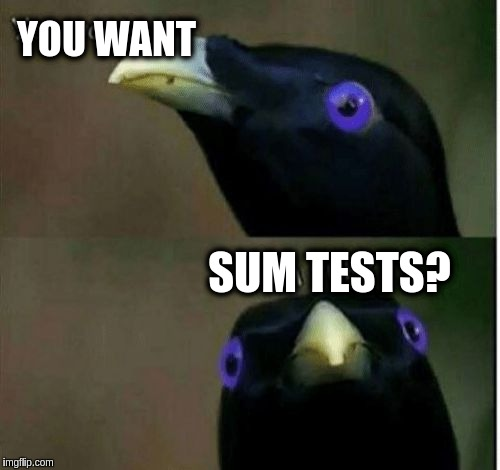
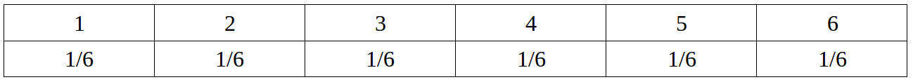
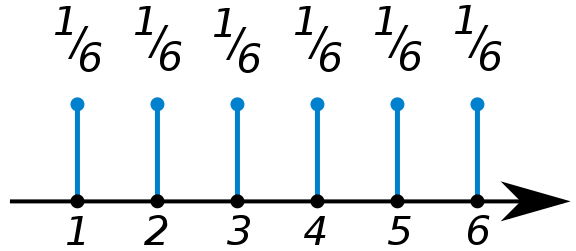
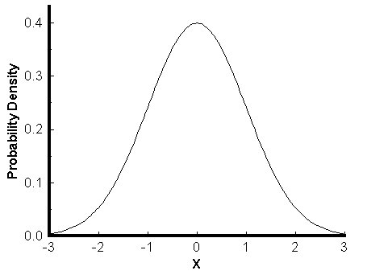
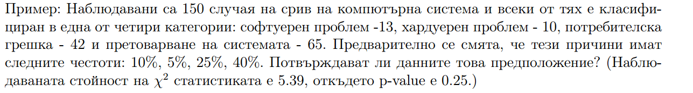
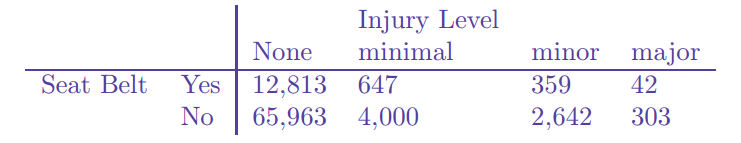

class: center, middle # Още тестове! --- # Днес ще се занимаем с още няколко теста. --- ---  --- * shapiro * two-sample proportion tests * two-sample mean tests * two-sample median tests * two-sample paired tests * тест за принадлежност към разпределение * тест за независимост * тест за еднаква разпределеност --- # Тестване дали разпределение е нормално ```r qqnorm(x) qqline(x, add=TRUE) hist(x) ``` Са начини да проверим дали разпределение идва от нормално. Но и двата начина са “на око” и са свободно интерпретируеми. По-точен, статистически метод за определяне дали разпределение е нормално е тест на Shapiro. ##shapiro.test(x) --- ##shapiro.test(x) Връща резултат: p-value. Ако p-value >= 0.05 приемаме нулевата хипотеза, че данните са от нормално разпределение. В противен случай не. ```r shapiro.test(beaver2$temp) ``` --- # Two-sample tests Two-sample тест се прилага, когато искаме да сравним параметрите на две популации - например дали средните на две популации са равни. Обикновено го прилагат, когато искат да проверят дали ново лечение се отразява по-добре на пациентите от старо лечение. --- За двете популации трябва да са изпълнени следните условия: * извадките трябва да са независими едни от други * всяка популация трябва да е поне 20 пъти по-голяма от извадката си --- # Two-sample тестове за пропорции Когато сравняваме параметъра p на две биномно разпределени популации. --- Пример: върви кампания за президент и искаме да проверим дали е успешна и дали има промяна в броя на хората, които искат да гласуват за този човек. Ето ги и резултатите: | | седмица 1 | седмица 2 | |---------|--------|---------| | За | 45 | 56 | | Против | 35 | 47 | Хипотезата ни е: $ H_0: p_1 = p_2$ $ H_a: p_1 != p_2$ --- Ако си спомняте prop.test(x, n) означаваше – х брой успешни от общо n. Тестът за две популации е ```r prop.test(c(45, 56), c(45 + 35, 56 + 47)) # успешните в един масив и общо питаните в друг ``` --- # Two-sample тестове за средно Когато за две извадки може да допуснем, че идват от нормални разпределения, може да направим тест дали средните на двете разпределения са равни. ## Тестова статистика --- Тестът е: ```r t.test(x, y, var.equal=TRUE) ``` Ако са с равни дисперсии, тестът който ползваме е: ```r t.test(x, y, var.equal=TRUE) ``` --- Пример: Измерено е време за оздравяване от някаква болест, като едната контролна група пациенти е взимала хапчета, а другата получава плацебо лечение. X with drug: 15 10 13 7 9 8 21 9 14 8 Y placebo: 15 14 12 8 14 7 16 10 15 12 Ако знаем, че са с равни дисперсии, можем ли да кажем, че лекарството “работи”? $H_0: \mu_x <= \mu_y$ $H_1: \mu_x > \mu_y$ --- ```r #### # drug and placebo x = c(15, 10, 13, 7, 9, 8, 21, 9, 14, 8) y = c(15, 14, 12, 8, 14, 7, 16, 10, 15, 12) shapiro.test(x) shapiro.test(y) t.test(x,y,alt="greater",var.equal=TRUE) ``` --- # Two-sample тестове за медиана Когато за две извадки не може да допуснем, че идват от нормални разпределения. ```r wilcox.test(x, y) ``` --- # Pair tests Ако все пак искаме да сравним разпределения, но пък те са зависими помежду си, има начин да направим това. Наричат се Pair tests и използват друг статистически модел. Единственото, което ние трябва да направим е да добавим paired=TRUE като аргумент на t.test или wilcox.test. --- Пример: двама оценяващи оценяват едни и същи контролни. Оценките, които са дали, са: Grader 1: 3 0 5 2 5 5 5 4 4 5 Grader 2: 2 1 4 1 4 3 3 2 3 5 Зависими са помежду си, защото все пак за всеки опит оценяват един и същ човек – очакваме, че ако първият оценяващ сметне контролно за добро, то и вторият също. --- ```r x = c(3, 0, 5, 2, 5, 5, 5, 4, 4, 5) y = c(2, 1, 4, 1, 4, 3, 3, 2, 3, 5) hist(x) shapiro.test(x) shapiro.test(y) wilcox.test(x, y, paired=TRUE) ``` --- ## да обобщим ### това бяха тестове, когато сравняваме две популации: ```r prop.test когато те са биномно разпределени t.test(x,y) когато са НЕЗАВИМИСИ помежду си, можем да допуснем, че са нормално разпределени и не са с равни дисперсии t.test(x,y, var.equal=TRUE) когато са НЕЗАВИМИСИ помежду си, можем да допуснем, че са нормално разпределени и са с равни дисперсии wilcox.test(x, y) когато са НЕЗАВИСИМИ помежду си, но не можем да допуснем, че са нормално разпределени wilcox.test(x, y, paired = TRUE) когато са ЗАВИСИМИ помежду си и не можем да допуснем, че са нормално разпределени ``` --- #Задача homework от UsingR библиотеката съдържа оценки на ученици от частните и държавните училища. Сравнете ги, коя хипотеза си струва да тествате? --- * Биномно разпределена величина – величината приема две стойности – успех, неуспех. * Полиномно разпределена величина – приема множество стойности (пак категорни). Пример: цвят на очите. k категории, p_i е вероятност да попаднем в i-тата катерогия. --- # Нали помните какво е разпределение? Двойките (стойност, вероятност случайната величина да заема тази стойност). --- # Какво е разпределение? Променливата може да заема различни стойности и всяка стойност да я заема с някаква вероятност. СТОЙНОСТ → ВЕРОЯТНОСТ ДА ПОЛУЧИМ ТАЗИ СТОЙНОСТ Пример: да се падне 1, когато хвърляме зар. 1 е стойността, а вероятността е 1/6 това да се случи. Стойността, която променлива може да заеме се описва с разпределение. (probability distribution) вероятностно разпределение. --- ### Разпределението може да бъде таблица, графика или математическо уравнениe  <div style=" display: inline-block;">   </div> P(X = a) = 1/6 за a ∈ {1, 2, 3, 4, 5, 6} --- # Тест за принадлежност Тест за принадлежност към някакво разпределение – съставяме хипотеза за разпределението на дадена случайна величина. --- Примерно: хипотеза, че очите на хората са разпределени така: | brown | blue | green | hazel | gray | |-------|------|-------|-------|------| | 44% | 30% | 13% | 9% | 4% | За да направим тест сравняваме тези хипотезистни стойности и реални стойности от направен опит. ---  --- Т.е. $Н_0:$ software = 20%, hardware = 5%, user = 10%, overloading = 40%, other = 25%. $H_1:$ да не е от това разпределение (поне едно равенство е нарушено) --- Тестовата ни статистика тук е: $ \chi = \sum_{i=1}^{n}\frac {(observed_i – expected_i)}{observed_i} \sim \chi^2 (n-1)$ К.О. е само вдясно, защото тестовата статистика винаги е неотрицателна. Тестът е двустранен, но за него няма значение дали $e_{ij} > o_{ij}$ или $o_{ij}>e_{ij}$ защото накрая разликата се вдига на квадрат и се сумира. --- ```r other = 150 - sum(c(13, 10, 42, 65, 150)) observed <- c(0.2, 0.05, 0.1, 0.4, 0.2) expected <- c(13, 10, 42, 65, 150) chisq.test(observed, expected) ``` --- Задача: Управител на магазин иска да провери посещаемостта на магазина си в проценти. Предполага следното: M T W T F S 10 10 15 20 30 15 т.е. в понеделник броят на потребителите е 10% от потребителите за цялата седмица. Той записвал една седмица посещаемостта и получил емпирично следните резултати: 30 14 34 45 57 20 Верен ли е моделът му? --- ```r observed <- c(30,14,34,45,57,20) expected <- c(.1, .1, .15, .2, .3,.15) chisq.test(observed,p=expected) ``` --- #Задача Проверете дали зарче е честно, ако са се паднали: Face 1 2 3 4 5 6 Number of rolls 22 21 22 27 22 36 --- ```r Вместо да умножаваме по общия брой, можем да сложим p. freq = c(22,21,22,27,22,36) # specify probabilities, (uniform, like this, is default though) probs = rep(1/6,6) chisq.test(freq, p=probs) ``` --- # Това беше тест за принадлежнаст към разпределение. # Съществува и тест за независимост --- # Тест за независимост Използваме го, когато искаме да проверим дали две разпределения са независими помежду си. $H_0: X_1 independent X_2$ $H_a: X_1 !independent X_2$ ---  Тези два реда независими ли са? Коланът прави ли разлика? ```r yesbelt = c(12813,647,359,42) nobelt = c(65963,4000,2642,303) chisq.test(data.frame(yesbelt,nobelt)) ``` --> значи са зависими! --- ---